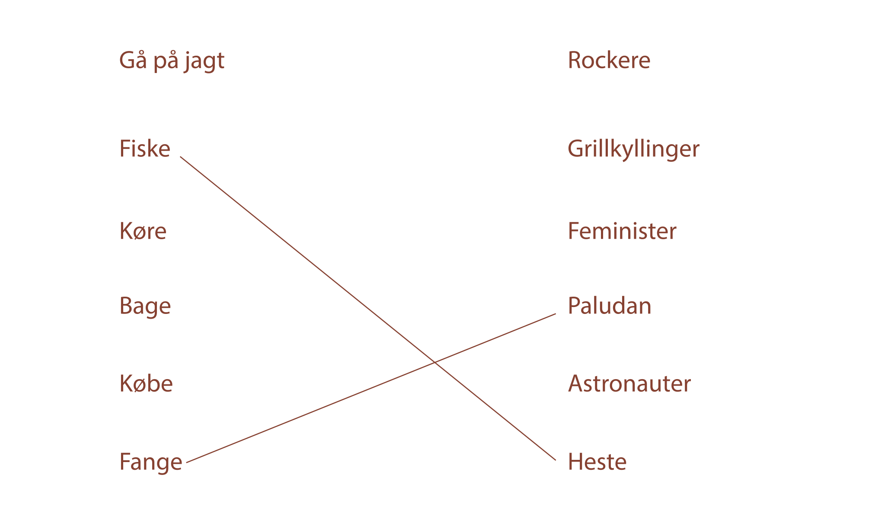
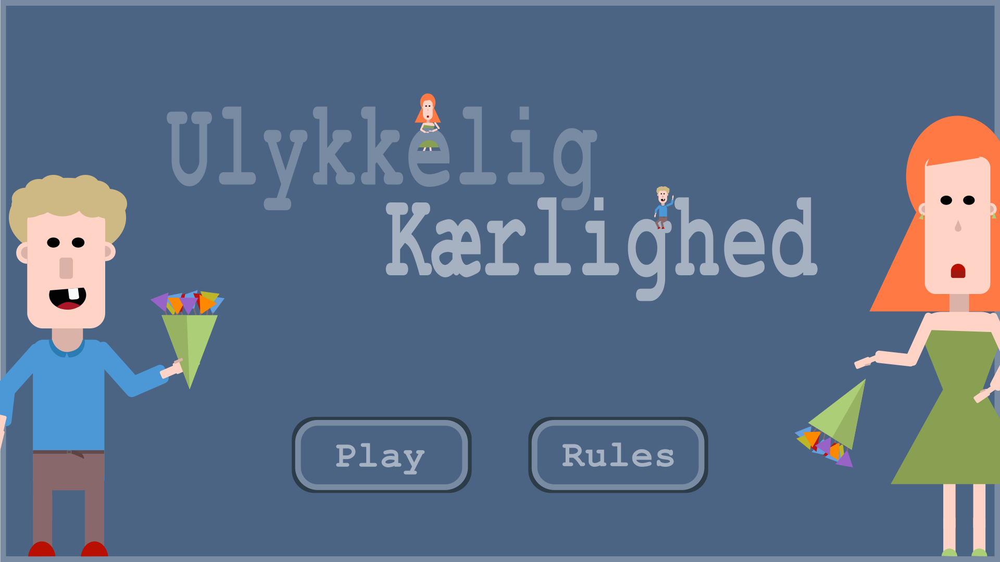
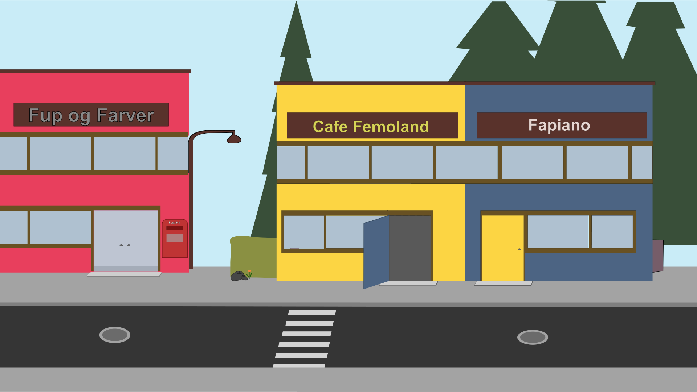
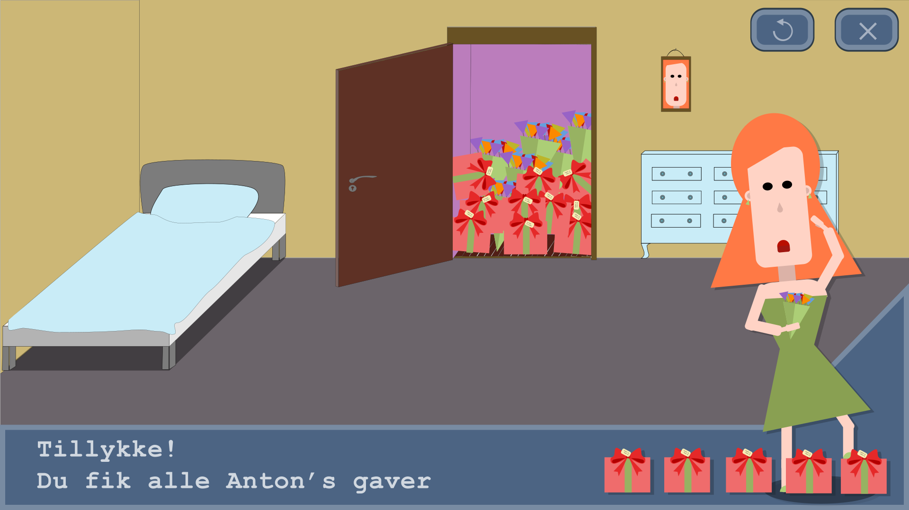
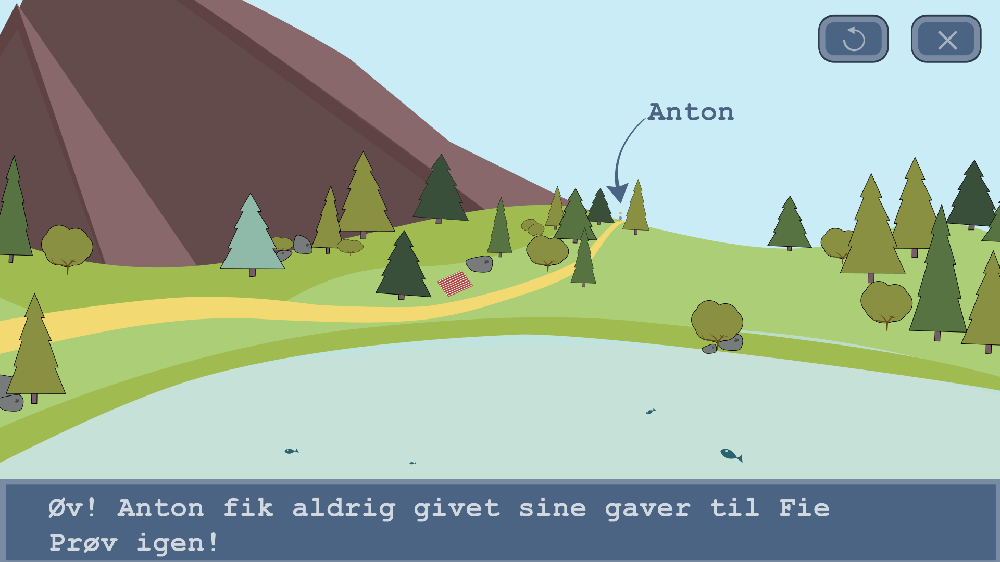

Udviklingen af eget spil
Idegenerering:
I denne process har vi haft fokus på diametrale modsætninger.
Nedskrivning af to forskellige mind-maps, og derefter søge en mulighed for at kombinerer de to.
Helst emner, som tilfældigvis passer godt sammen og giver en sjov vinkel.
Fx. At gå jagt efter grillkyllinger i skoven.
For at hjælper kan man opstille en ordliste og lave en tilfældig steg, som her:
Figur Design:
Skabelsen af en god karakter, kræver at man følger nogle retningslinjer.
Karakteren har en symbolik I sine former, som kendetegner deres egenskaber.
Man ser ofte den onde karakter være spids og skarp I sit design, mens den gode oftest designes blødt og rundt.
Her har vi fokuseret på hvilke former, der skabte det rigtige udtryk og hvordan farver hjælper en på vej.
Jeg brugte meget tid på at lege med figur design I Illustrator, før jeg fastsatte mig på en ide.
Derfor er min designprocess rentegnet fra starten og klar til at blive eksporteret som SVG.
Da jeg først fik fastsat former, fik jeg lavet uskyldige Anton, som giver grobund for Fie's design.
Jeg har givet Anton den blide blå farve og de lyse hår og bygget ham af runde former. Fie er derimod bygget mere op af trekanter, og har med sine røde læbestift og røde hårfarve lidt symbolik af en ond karakter.
I et forsøg på ikke at udpensle deres karakter-træk, og gøre det tve-tydigt, har jeg derimod givet dem detaljer i udtryk, kropsholdning og omgivelser.
Derfor har hele mit design samme udtryk hele vejen igennem processen.
Baggrundsdesign:
Her fokuser vi meget på komposition og placering af elementer, så vi skaber en dybde eller symbolik.
Vi har arbejdet med tre key points:
- Rule of Thirds:
- Placeringen af et objekt I det gyldne snit. Her er der tale om de tre horisontale og vertikale rækker.
- Focal Point:
- Bestem hvor blikket falder ved at ændre på kontrasten I et billede. Påvirkes med farver, opacity og blur
- Atmopheric Perspective:
- Skab en baggrund, mellemgrund og forgrund. Derved får man dybde I billedet
Prototyper:
   Aktivitetsdiagram:
I processen skulle vi optegne et diagram for spillets handlinger og forløb.
Her starter man med simpelt at optegne forskellige muligheder, fx hvad skal der ske når man vinder eller dør.
Det overordnede gameplay bestemmes her, mens man rykker videre til næste trin for at forbedrede koden.
I den mere udvidede version; State Machine Diagrammet begynder vi på at visualisere funktioner, så de mere slavisk kan overføres til koden.
Eksempelvis kan man påskrive Nulstil liv og point ved start, da man ved
et
tryk på Restart Game skal have resettet disse.
Disse overføres slavisk til koden I kommentarer, og derved har man sit state machine diagram I kodeform, og kan nydeligt og redeligt begynde at tilføje de forskellige stykker kode.
Document Object Model; DOM
DOM er en platform, som er "sprog-neutral".
HTML koden har flere ansigter, og det er browserens opgave at oversætte koden til et web-site.
Her struktureres HTML koden, så den loades og renderes korrekt i en browser.
Her
er der
altså tale om en lagret repræsentation, som kan påvirkes med andre kodesprog. Her kender vi CSS fra tidligere, som bestemmer styling af elementer.
Javascript
Java kender man fra applikationssoftware på tværs af platformer. Javascript er browser-programmer.
Det er hjernen bag et givent site. I HTML koden kan vi kæde fx Nav sammen med ID's og Classes, og på den måde få interaktive
menupunkter.
Ved at bruge Javascript kan vi kalde på et element, ændre det og lytte efter specifikke funktioner, og påbegynde en ny på det rigtige tidspunkt.
Her får vi altså en stor kontrol over vores site, hvordan det skal vises, og hvordan det skal opfører sig, når et bestemt kriterie er opfyldt.
- Her er lidt konkrete eksempler:
- Starte en animation, når man når bunden af sitet.
- Starte en animation, når et element er indenfor viewport.
- Vise en copy-tekst, hvis en bruger gør en forkert handling.
- Starte en lyd, når man går ind på et bestemt side.
Koden for knappen
Ved at benytte en eventlistener, vil scriptet lytte efter et click på den box vi assigner den til. Her bruger vi querySelector til at vælge vores test-box.
Denne eventlistener vil føre til en funktion, som skal defineres. Det bestemmes i de sidste fire linjer.
document.querySelector("#test_box").addEventListener("click", visTest);
function visTest() {
document.querySelector('#pointClick_sound').volume = 1;
document.querySelector('#pointClick_sound').play();
}
visTest vil altså afspille en lyd, der bliver hentet fra html og CSS med volume = 1 -> men kun når der klikkes på knappen.
Brug af Variabler
Med variabler kan vi forkorte linjer betydelig, ved at fjerne mellemledet: document.querySelector('#pointClick_sound')
let pointClick= document.querySelector('#pointClick_sound');
function visTest() {
pointClick.classList..volume = 1;
pointClick.classList.play();
}
På den måde kan vi skrive vores kode hurtigere, og den bliver mere redelig og fri for gentagelser.
Problemer med JavaScriptet
Grundet fordelingen af dårlige og gode karakterer, har jeg valgt at vise alle karakterene på første load.
I mangel på et mere dynamisk script, som bestemmer sandsynligheden for placering af karakter og hvilken type. Som spillet
er
nu overlapper karakterne hinanden, og spillet har en tendens til at loade den samme anton, som man klikkede på.
Grundet den rodede gennemgang af det komplicerede emne, de utrolig mange gennemgange af point, tid, random position og spillet generelt med forskellige fremgangsmåder, sad jeg i en uheldig position.
For hjælpen online er
på
næste
skridt, eller i en hel anden situation, så det hjalp ikke det store. Selv ikke W3Schools.
Denne side er eksempelvis produceret udelukkende af online-hjælp og det meget brugte jQuery, derfor ser mit javascript helt anderledes ud.
Udviklingen af Gruppe spil
Github:
Github er en hosting-service for udviklere. Her oprettes et Repository.
Dette kan indeholder ens source-kode, som derved bliver let tilgængelig for andre.
Det smarte ved github er versionstyring og kommentarer. Her får du et direkte indblik i arbejdet og kan nemt rette i koden, og pushe dine rettelser med kommentarer, der forklarer dem for andre.
I vores arbejde med kode, er vi blevet introduceret til Git.
Git er en simpel extension til Github, som gør det muligt at benytte Github direkte fra en editor.
Jeg har dog valgt at bruge Github Desktop, da man her har et UI at følge.
Vigtigheden af et UI har vi lært, og dette understreges kun med de mange misforståelser blandt eleverne.
Fernisering:
Afsluttende holdte vi en fernisering for to 8. klasser, som besøgte skolen, for at prøve vores spil.
Her fik vi mange sjove kommentarer, og relativt lidt kritik.
Der blev primært lagt vægt på en for lille skrifttype og en sløv animation. Disse blev hurtigt rettet inden feedback fra lærerne.

Interview:
Her er processen stortset ens, men I fællesskab.
Til forskel havde vi et specifik emne og målgruppe - derfor skulle vi tage kontakt til denne målgruppe.
I gruppen var det kun Mona, som havde adgang til en teenager, så hun fik opgaven at udføre et interview, hvor hun fremviser to forskellige designs og får svar på vores forberedte spørgsmål.
På bedste UX manér indordnede vi os efter bemærkningerne fra vores testpersoner.
Det kan ses på dokumentations-sitet, så jeg vil ikke genskrive det her.
Scrum:
I forbindelse med vores udvikling, har vi støttet os til SCRUM-metoden.
Denne form for projektstyring giver gruppen et overblik, da man dagligt holder SCRUM meetings, hvor man fastlægger det daglige arbejde, og til sidst lader den
ansvarlige SCRUM-Master tage de vigtige beslutninger.
Her undgår vi de typiske design-konflikter, og finder fælles løsninger i det pressede forløb.
SCRUM-Værktøjer:
- Product-owner:
- Den person som ønsker et stykke arbejde udført vil også have mest viden om projektet.
I vores tilfælde var det underviserne.
- Den person som ønsker et stykke arbejde udført vil også have mest viden om projektet.
- Scrum Master:
- Denne person er ansvarlig for at SCRUM-forløbet forløber som planlagt.
Gruppen udpegede selv SCRUM Master dagligt.
- Denne person er ansvarlig for at SCRUM-forløbet forløber som planlagt.
- Developmentteam:
- Holdet på projektet -> os selv.
- Burndown Chart:
- Graf som viser hele forløbet ud fra opgaver.
Her stiger grafen med antal igangværende opgaver, og skulle gerne falde løbende i løbet af projekt-ugen.
- Graf som viser hele forløbet ud fra opgaver.
- Daily Scrum:
- Et kort info-møde mellem holdet, hvor man gennemgår det arbejde man har gennemført.
Her kommer man ind på det arbejde man har igen, og de udfordringer der kommer.
- Et kort info-møde mellem holdet, hvor man gennemgår det arbejde man har gennemført.
-
Scrum of Scrum:
- Her er der tale om et Scrum møde mellem flere forskellige hold.
- Trello:
- Vores online SCRUM-board. Her havde vi alle opgaver, blokeringer og ideer opdelt i 4 kategorier.
To Do - In Progress - Blocked - Done!
- Vores online SCRUM-board. Her havde vi alle opgaver, blokeringer og ideer opdelt i 4 kategorier.